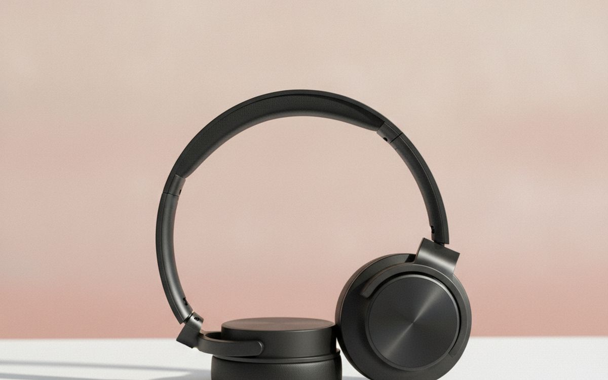
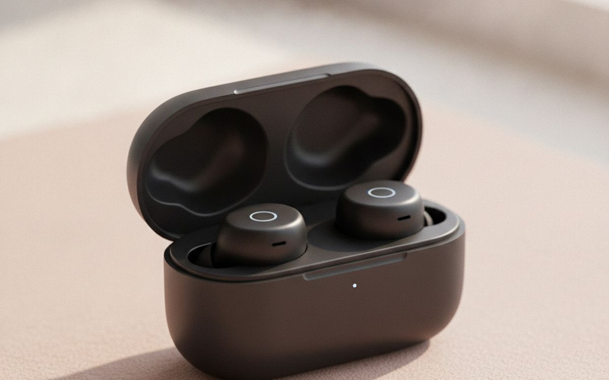
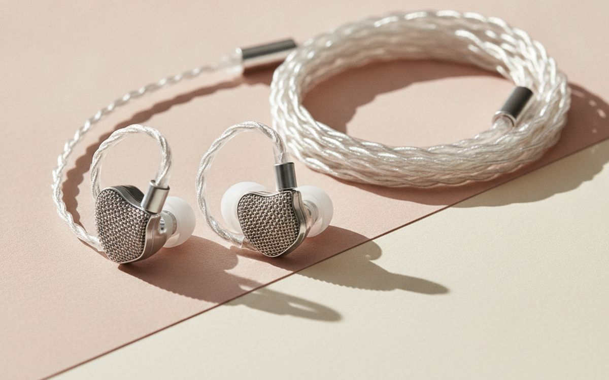
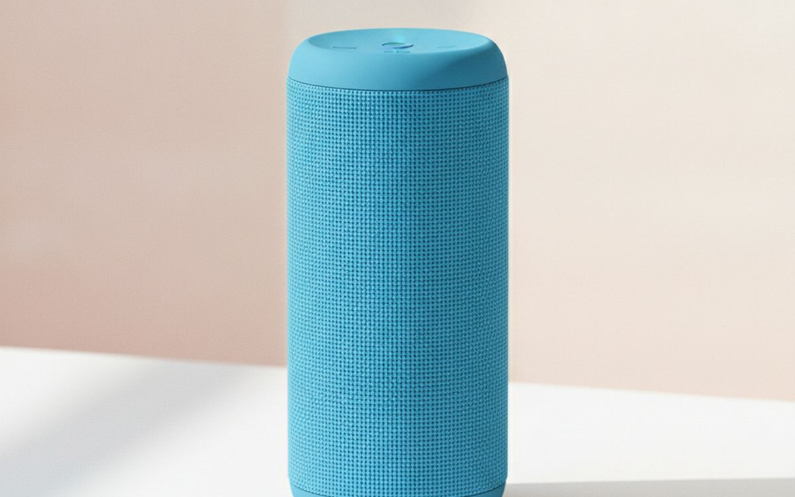
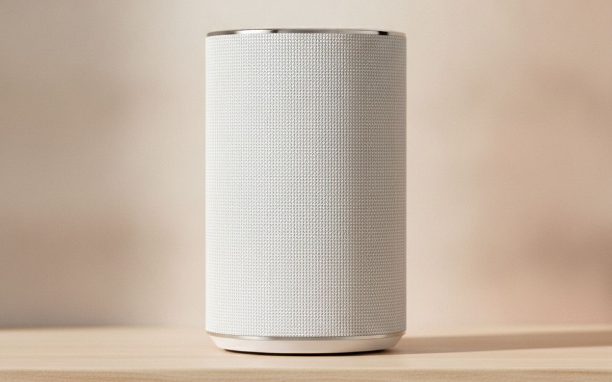
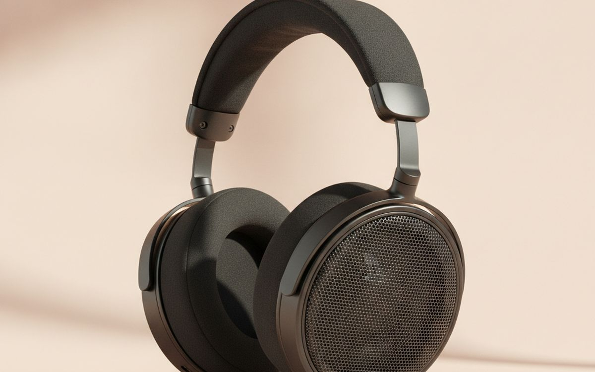
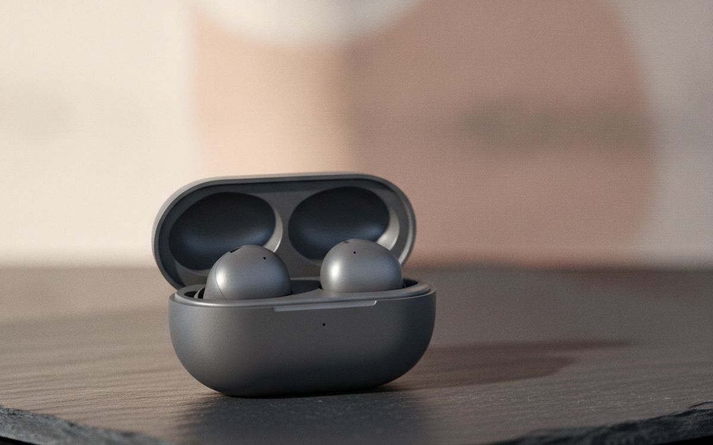
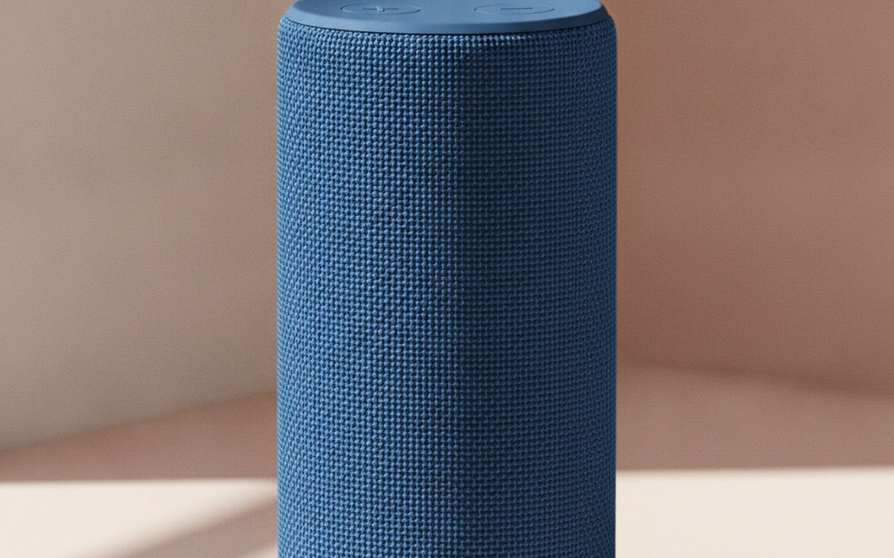
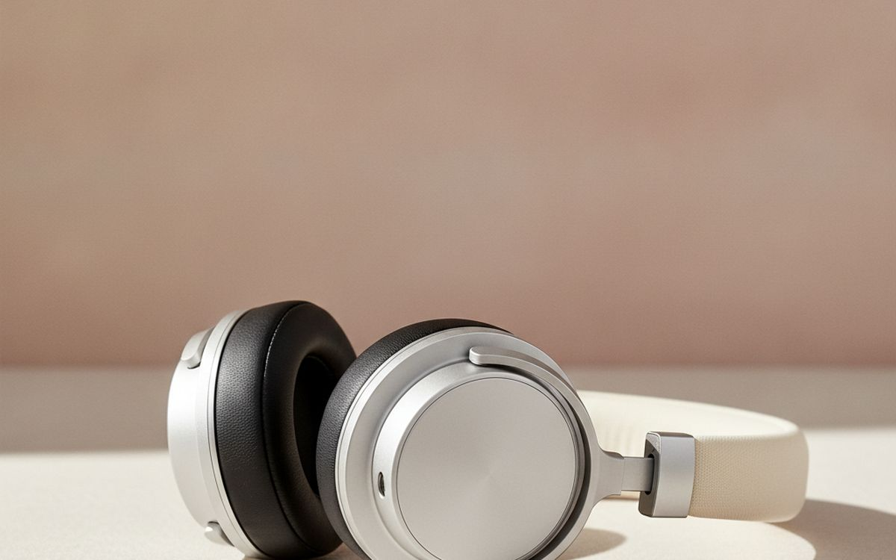
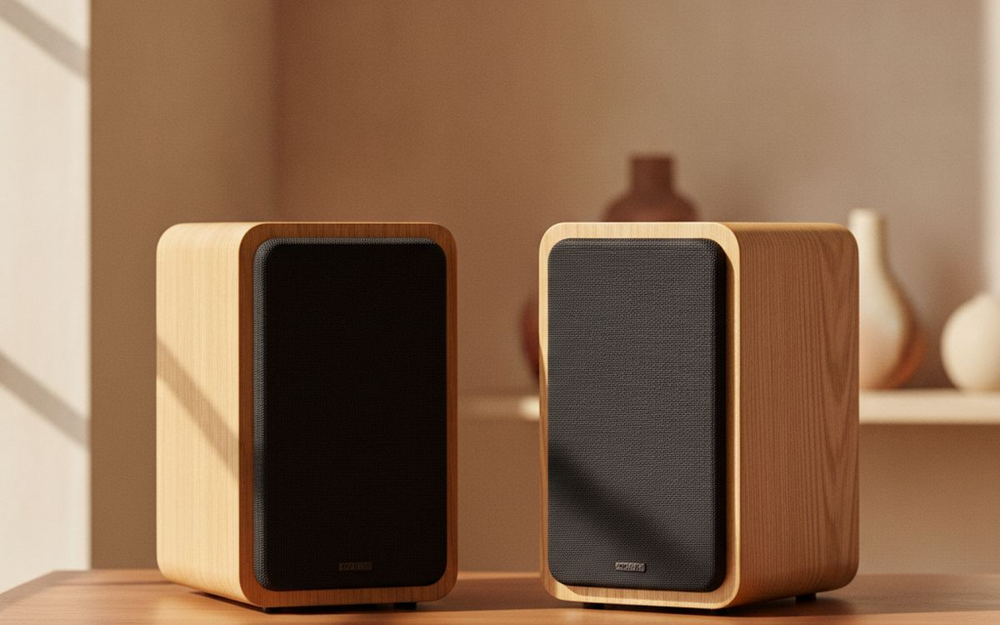

קניית ציוד שמע דורשת סינון של הרבה שיווק. הנה מה שמספק איכות צליל ושימושיות ללא תכונות מיותרות.
שוק השמע מלא במונחים מבלבלים ושיווק אגרסיבי. כל מוצר מבטיח 'צליל סוחף' או 'בס עמוק'. חברות רבות מתמקדות בתכונות שרוב האנשים לא צריכים, מה שמעלה מחירים. קל להיסחף למפרטים שלא מתורגמים לחוויית האזנה טובה יותר לשימוש יומיומי. מה שחשוב ביותר הוא מה שאתה שומע, לא מה שהקופסה אומרת.
ציוד שמע טוב צריך לשפר את חיי היומיום שלך. זה אומר צליל ברור ומאוזן, נוחות ללבישה ממושכת ואמינות. אל תשלם תוספת עבור קודקים אזוטריים או הרחבות טווח תדרים שוליים. התמקד בביצועים ליבה ובעיצוב פרקטי. אפשרויות יקרות רבות מציעות תשואה פוחתת. היצמד למה שמספק יתרונות מוחשיים לצרכים הספציפיים שלך.
גילוי נאות. הקישורים בעמוד הזה הם קישורי שותפים. אם תקנו דרכם אנחנו עשויים להרוויח עמלה, בלי תוספת עלות לכם. זה לא משפיע על מה שנכנס לרשימה או על הסדר שלו.
איך בחרנו
בחרנו את המוצרים הללו על סמך הביצועים הידועים שלהם, התמורה והקבלה הציבורית. מדריך זה מתמקד במקרי שימוש נפוצים לבית ולנסיעות, תוך הימנעות מתכונות נישה או עיצובים הנדסיים יתר על המידה. אנו מעדיפים פריטים שמספקים באופן עקבי את הבטחותיהם ללא עלות מופרזת. לא ביצענו בדיקות מעשיות של מוצרים אלה. ההמלצות שלנו מבוססות על מחקר מידע זמין באופן נרחב וחוויות משתמש נפוצות.
השוואה מהירה
המחירים הם הערכה נכון לזמן הכתיבה ומשתנים לעיתים קרובות.
הבחירות

1
לשקט בדרכיםSony WH-1000XM4
$250-350
אוזניות אלו מסוג 'על האוזן' מספקות באופן עקבי את ביטול הרעשים האקטיבי הטוב ביותר שקיים. הן בחירה מוצקה לחסימת זמזום מטוסים או ציוץ משרדי. פרופיל הצליל מאוזן בדרך כלל, אם כי חלק מהמאזינים מוצאים אותו מעט חם, מה שניתן להתאמה דרך האפליקציה. הנוחות היא נקודה חזקה, מה שהופך אותן מתאימות לנסיעות ארוכות או למשך עבודה ממושך. חיי הסוללה חזקים, ומציעים בדרך כלל כ-30 שעות עם ANC פעיל. זה הופך אותן למלווה אמין ללא טעינה מתמדת. הפשרה עבור ביצועים אלו היא המחיר. אתה משלם פרמיה עבור יכולות ביטול הרעשים שלהן.
בעד
- ביטול רעשים אקטיבי מעולה
- נוחות ללבישה ממושכת
- חיי סוללה אמינים
נגד
- נקודת מחיר גבוהה
- ניתן להתאים את פרופיל הצליל, אך יש המעדיפים תגובה שטוחה יותר

2
צליל טוב, תקציב צנועAnker Soundcore Liberty 4 NC
$70-100
עבור אוזניות אלחוטיות אמיתיות, ה-Liberty 4 NC מציעות כמות מפתיעה של ביצועים ביחס למחירן. ביטול הרעשים האקטיבי, למרות שאינו משתווה לאפשרויות המובילות, יעיל בהפחתת רעשי סביבה יומיומיים כמו תחבורה ציבורית או בתי קפה הומי אדם. איכות הצליל טובה בדרך כלל, עם נוכחות בס מורגשת שרבים נהנים ממנה. חיי הסוללה חזקים, ומציעים כ-10 שעות מהאוזניות עצמן, כשהמארז מאריך זאת משמעותית. הן בחירה פרקטית אם אתה רוצה להשתיק הסחות דעת מבלי להוציא הון. עם זאת, איכות השיחה יכולה להיות נקודת תורפה בסביבות רועשות, וההתאמה עשויה לא להתאים לכל צורת אוזן באופן מושלם.
בעד
- ביטול רעשים יעיל ביחס למחיר
- חיי סוללה ארוכים לאוזניות ולמארז
- התאמה נוחה לרוב
נגד
- ANC לא ברמה של אפשרויות פרימיום
- איכות שיחה יכולה להיות לא עקבית

3
איכות צליל במעט כסףMoondrop Chu II
$20-30
אוזניות ה-Moondrop Chu II החוטיות הן בולטות באיכות הצליל הטהור במחיר נמוך מאוד. הן אינן אלחוטיות, מה שאומר שאין סוללות לדאוג להן ואין בעיות צימוד בלוטות'. פשוט מחברים אותן. חתימת הצליל שלהן זוכה להערכה רבה בדרך כלל בשל היותה מאוזנת וברורה, ומגלה פרטים שלעיתים קרובות מתפספסים באוזניות במחירים דומים. זה הופך אותן למצוינות להאזנה ממוקדת בבית או כגיבוי אמין. החיסרון העיקרי הוא טבען החוטי; הן דורשות מכשיר עם שקע 3.5 מ"מ או מתאם. הן גם לא מיועדות לשימוש פעיל והכבל עלול להסתבך.
בעד
- איכות צליל יוצאת דופן ביחס למחיר
- אין סוללה לטעינה
- חיבור אמין יותר מאלחוטי
נגד
- דורש שקע אוזניות או מתאם
- לא נוח לשימוש פעיל

4
רמקול לנסיעות או לפטיוJBL Flip 6
$100-130
ה-JBL Flip 6 הוא בחירה אמינה לרמקול בלוטות' נייד. הוא מספק צליל חזק באופן מפתיע לגודלו הקומפקטי, המסוגל למלא חדר קטן או לספק מוזיקת רקע בחוץ. העיצוב הצילינדרי שלו מקרין צליל בכיוונים מרובים, שימושי בהגדרות לא רשמיות. יתרון משמעותי הוא דירוג ה-IP67 שלו, מה שאומר שהוא אטום לאבק ועמיד למים, מה שהופך אותו מתאים לצד בריכה או לסדנאות. חיי הסוללה סבירים, בדרך כלל כ-12 שעות. עם זאת, הפיזיקה מכתיבה שתגובת הבס שלו מוגבלת, והוא חסר כניסת עזר, מסתמך אך ורק על בלוטות'. הוא פרקטי, אבל לא להאזנה קריטית.
בעד
- פלט צליל חזק לגודלו
- עמידות מצוינת למים ואבק
- קומפקטי וקל לנשיאה
נגד
- תגובת בס מוגבלת עקב גודל
- אין כניסת עזר 3.5 מ"מ

5
רמקול לחדרים בביתSonos Era 100
$230-280
ה-Sonos Era 100 משרת היטב כרמקול ביתי ייעודי, במיוחד אם אתה מתכנן לבנות מערכת שמע מרובת חדרים. הוא מפיק צליל ברור ועשיר שמסתיר את טביעת הרגל הקטנה יחסית שלו, מה שהופך אותו מתאים למטבחים, חדרי שינה או אזורי מגורים קטנים יותר. ההגדרה במערכת האקולוגית של Sonos בדרך כלל פשוטה, והאפליקציה מספקת שליטה טובה. הוא מציע קישוריות בלוטות' ו-Wi-Fi. החיסרון העיקרי הוא העלות; זהו מוצר פרימיום. בנוסף, התחייבות למערכת האקולוגית של Sonos פירושה פחות גמישות עם מותגים אחרים, ושילוב העוזר החכם שלה מוגבל בהשוואה לחלופות מסוימות.
בעד
- צליל באיכות גבוהה לרמקול קומפקטי
- חווית שמע מרובת חדרים חלקה
- קל להתקנה ולשימוש
נגד
- דורש מחויבות למערכת האקולוגית של Sonos
- יקר בהשוואה לרמקולי בלוטות' בסיסיים

6
להאזנה ביתית ברורהSennheiser HD 560S
$150-200
להאזנה ייעודית בסביבה ביתית שקטה, אוזניות ה-Sennheiser HD 560S הפתוחות מציעות תמורה מצוינת. העיצוב הפתוח שלהן מאפשר לצליל לברוח, ויוצר במה צליל רחבה וטבעית יותר מאוזניות סגורות. זה תורם לתחושת מרחב ודיוק בשמע. הן ידועות בצליל ניטרלי ואנליטי, מה שהופך אותן לטובות להערכת מוזיקה מפורטת. הנוחות גבוהה בדרך כלל, ומאפשרת הפעלות האזנה ארוכות. החיסרון העיקרי הוא היעדר בידוד רעשים; הן מכניסות רעשי סביבה, וצליל דולף החוצה. הן לא לשימוש ציבורי ודורשות מקום שקט.
בעד
- בהירות צליל ובמה מצוינות
- נוחות להפעלות האזנה ממושכות
- תגובת תדר ניטרלית
נגד
- אין בידוד רעשים; צליל דולף החוצה
- דורש סביבה שקטה לחוויה הטובה ביותר

7
השקט הטוב ביותר באוזניותBose QuietComfort Earbuds II
$250-300
אוזניות אלו מציעות את ביטול הרעשים האקטיבי היעיל ביותר שקיים בפורמט אלחוטי אמיתי. אם העדיפות שלך היא שקט בסביבות רועשות, הן מתמודדות חזקות לנסיעות או לעבודה ממוקדת. ההתאמה נוחה ומאובטחת בדרך כלל לרוב המשתמשים, וזה חשוב למכשירי תוך-אוזן. איכות הצליל טובה, עם שחזור שמע ברור. השיקול העיקרי הוא המחיר הפרימיום שלהן; אתה משלם עבור ביטול הרעשים המוביל בקטגוריה. למרות שהן חזקות, חיי הסוללה שלהן אינם יוצאי דופן בהשוואה למתחרים מסוימים, מה שאומר שהן עשויות להזדקק לטעינות תכופות יותר מאפשרויות אחרות.
בעד
- ביטול רעשים אקטיבי מוביל בתעשייה
- התאמה נוחה ומאובטחת
- איכות צליל טובה עם שירה ברורה
נגד
- מחיר רכישה גבוה
- חיי סוללה ממוצעים לאוזניות פרימיום

8
רמקול לטיפול מחוספסUltimate Ears Boom 3
$120-170
ה-UE Boom 3 בנוי לעמידות והרפתקאות. העיצוב הצילינדרי שלו מספק צליל 360 מעלות, מה שהופך אותו נהדר לשיתוף מוזיקה בקבוצה בחוץ. הוא עמיד למים ואבק, ואף צף, מה שמוסיף שכבת ביטחון אם אתה ליד מים. רמקול זה יכול לספוג מכות ולהמשיך לנגן. בעוד שהצליל חזק וברור לגודלו, הוא אינו המעודן ביותר להאזנה קריטית, והבס יכול להרגיש מוגבל במידה מסוימת. עמדת הטעינה, המוסיפה נוחות, היא רכישה נוספת, וזה חיסרון למוצר שכבר נמצא בטווח מחירים זה.
בעד
- מבנה קשוח ועמיד
- הקרנת צליל 360 מעלות
- עמיד למים וצף
נגד
- צליל יכול להיות פחות מעודן ממתחרים מסוימים
- עמדת טעינה נמכרת בנפרד

9
ביטול רעשים במחיר סבירAnker Soundcore Space Q45
$100-150
אוזניות Anker Soundcore Space Q45 מספקות הרבה תמורה למחירן, במיוחד בכל הנוגע לביטול רעשים אקטיבי. הן מציעות רמת הפחתת רעשים חזקה, שהיא יעילה באמת עבור צלילי רקע נפוצים כמו מיזוג אוויר או תנועה. הנוחות טובה, עם כריות אוזניים רכות ורצועת ראש מרופדת, מה שהופך אותן מתאימות לתקופות לבישה ארוכות. חיי הסוללה הם נקודת חוזק משמעותית, לעיתים קרובות עולה על 50 שעות בטעינה בודדת עם ANC מופעל. חתימת הצליל מדגישה לעיתים את הבס, מה שחלק מהמאזינים עשויים למצוא מעט מודגש מדי. חומרי המבנה הכלליים מרגישים פחות פרימיום מדגמים יקרים יותר.
בעד
- ביטול רעשים אקטיבי טוב מאוד ביחס למחיר
- חיי סוללה יוצאי דופן בטעינה בודדת
- נוחות להאזנה ממושכת
נגד
- פרופיל צליל נוטה לבס לפעמים
- איכות בנייה מרגישה פחות פרימיום מיריבים יקרים

10
רמקולים לשולחן עבודהEdifier R1280DBs
$130-170
רמקולי Edifier R1280DBs הם בחירה פרקטית לרמקולי שולחן עבודה, המציעים איכות צליל טובה ללא צורך במגבר נפרד. הם כוללים אפשרויות כניסה מרובות, כגון בלוטות', אופטי וקלט RCA כפול, מה שהופך אותם לרב-תכליתיים לחיבור למחשבים, טלוויזיות או מקורות שמע אחרים. הצליל מאוזן בדרך כלל לגודלם ולמחירם, עם תגובת בס סבירה. הן מהוות שדרוג משמעותי על פני רמקולי מוניטור מובנים טיפוסיים. חיסרון מרכזי הוא הצורך שלהן בשקע חשמל ובשטח פיזי; הן אינן ניידות. בחדרים קטנים, הבס יכול לפעמים להיות מעט רועם אם לא ממוקם בזהירות.
בעד
- איכות צליל טובה לשימוש בשולחן עבודה
- אפשרויות כניסה מרובות כולל בלוטות'
- אין צורך במגבר חיצוני
נגד
- לא נייד באמת; דורש שקע חשמל
- בס יכול להיות רועם בחדרים קטנים
שאלות נפוצות
האם אני באמת צריך אוזניות מבטלות רעשים?
ביטול רעשים אקטיבי (ANC) יעיל עבור צלילים קבועים בתדר נמוך כמו זמזום מנוע או מיזוג אוויר. הוא פחות יעיל עבור רעשים פתאומיים או קולות. אם ההאזנה העיקרית שלך היא בסביבות שקטות, כמו משרד ביתי או ספרייה, ייתכן שלא תפיק הרבה מ-ANC. אוזניות סגורות רגילות מציעות בידוד פסיבי ללא עלות נוספת או פוטנציאל לפרופיל צליל מעט שונה. שקול את הסביבה הטיפוסית שלך. תשלום נוסף עבור ANC שאתה בקושי משתמש בו אינו השקעה טובה.
האם כבלים יקרים שווים את הכסף לצליל טוב יותר?
עבור רוב מערכות השמע הנפוצות, הוצאת כסף רב על כבלים יקרים אינה מציעה יתרון נשמע. האותות החשמליים העוברים דרך חוטי רמקולים או מחברים טיפוסיים אינם מושפעים באופן שבני אדם יכולים לתפוס, במיוחד במרחקים קצרים. התמקד בתקציב שלך ברמקולים, באוזניות או במכשיר המקור עצמו. שם מגיעים שיפורים אמיתיים באיכות הצליל. כבלים במחיר גבוה הם לעיתים קרובות טקטיקת שיווק. היצמד לכבלים במחיר סביר ובנויים היטב שמתאימים לצרכים שלך לקישוריות ועמידות.
מה ההבדל בין אוזניות פתוחות לסגורות?
אוזניות סגורות אוטמות סביב האוזניים שלך, ומספקות בידוד רעשים פסיבי ומונעות דליפת צליל החוצה. זה הופך אותן למתאימות למקומות ציבוריים או לסביבות משותפות. אוזניות פתוחות כוללות כריות אוזניים מחוררות, המאפשרות לאוויר וצליל לעבור דרכן. עיצוב זה בדרך כלל מביא לבמה צליל רחבה וטבעית יותר ויכול להרגיש פחות מעייף לאורך זמן. עם זאת, הן אינן מציעות בידוד רעשים ומאפשרות לצליל להיכנס ולצאת, מה שהופך אותן ללא מתאימות לנסיעות או לשימוש במשרד. בחר בהתאם לסביבת ההאזנה שלך.
האם שמע בלוטות' מספיק טוב להאזנה למוזיקה?
עבור רוב האנשים ורוב ההאזנה היומיומית, איכות שמע בלוטות' מספקת בהחלט. קודקים מודרניים של בלוטות' כמו aptX או LDAC יכולים להעביר שמע בקצבי סיביות גבוהים יותר, תוך מזעור אובדן נתפס. בעוד שבאופן תיאורטי, חיבור חוטי יכול להציע שמע ללא דחיסה, ההבדל לרוב אינו ניתן להבחנה בהאזנה מזדמנת, במיוחד כאשר לוקחים בחשבון את איכות ההקלטה ואת סביבת ההאזנה. אם אתה אודיופיל קריטי המאזין לקבצים ברזולוציה גבוהה בחדר שקט, חוטי עשוי עשוי להיות טוב יותר במעט. לנסיעות, אימונים או מוזיקת רקע, נוחות הבלוטות' בדרך כלל עולה על כל פשרה תיאורטית קטנה בשמע.
← כל המדריכים
הגשנו בקשה להצטרף לתוכנית השותפים של אמזון. איננו שותפים של אמזון עדיין, ואיננו מרוויחים דבר מקישורים לאמזון בשלב זה. כשותפים של עליאקספרס אנחנו מרוויחים עמלה מרכישות מזכות. המחירים והזמינות נכונים לזמן הפרסום ועשויים להשתנות.